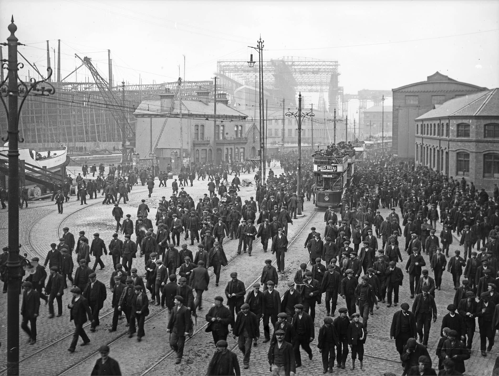
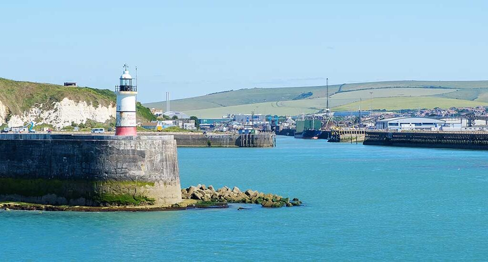
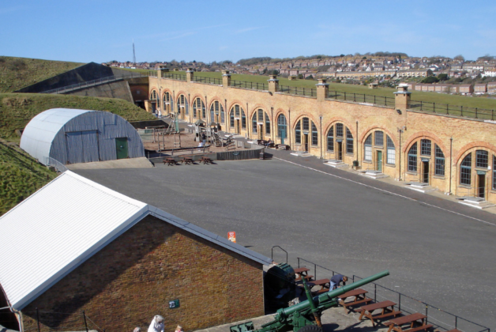

The Newhaven Heritage Centre (NHC) is a Scottish charitable Organisation (SCIO) — the direct successor of the Newhaven Action Group (NAG) which was set up in 2009 to try to restore the pre-existing Newhaven Community Museum. This had been closed because of council financial constraints.


Many residents still speak fondly of the former Newhaven Museum, and visitors frequently arrive expecting to find it. Its absence is felt deeply within the community, as it once stood as a cherished focal point for local identity and shared memory. At its height, the museum welcomed more than 30,000 people each year, an impressive achievement even before the arrival of cruise ships tendering passengers directly into Newhaven’s harbour, and before the anticipated opening of the new tram terminus that will further establish Newhaven as a destination in its own right. Our intention in bringing the museum back to life extends far beyond nostalgia or popularity. The museum embodied the essence of Newhaven: a resilient, close‑knit community shaped by maritime heritage, collective endeavour, and generations of lived experience. Restoring it is an opportunity to honour that legacy, safeguard the stories that define us, and ensure that Newhaven’s unique character continues to inspire both residents and visitors for years to come.
